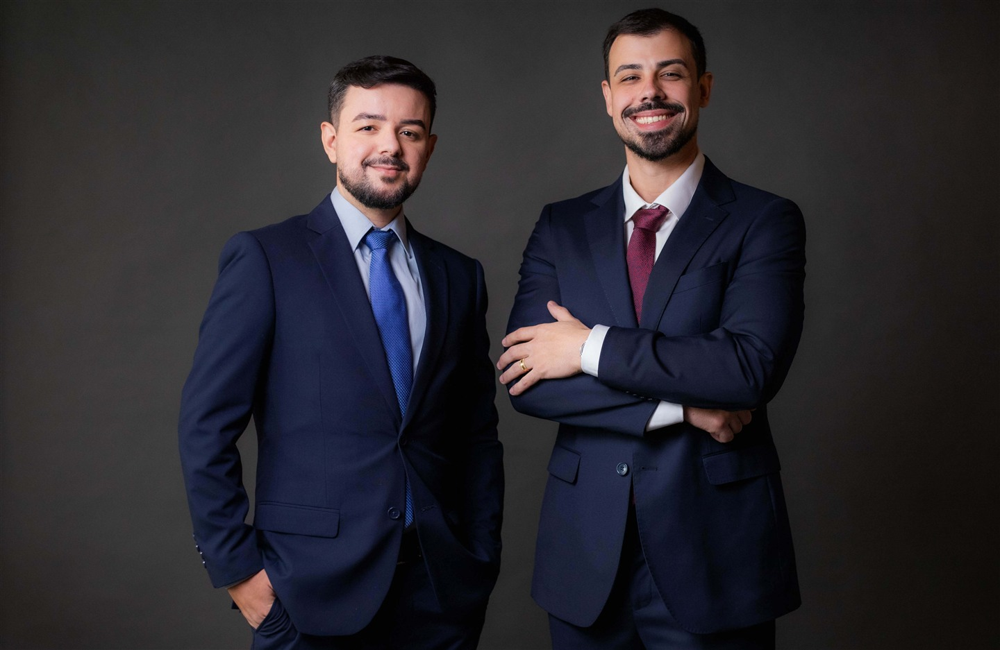
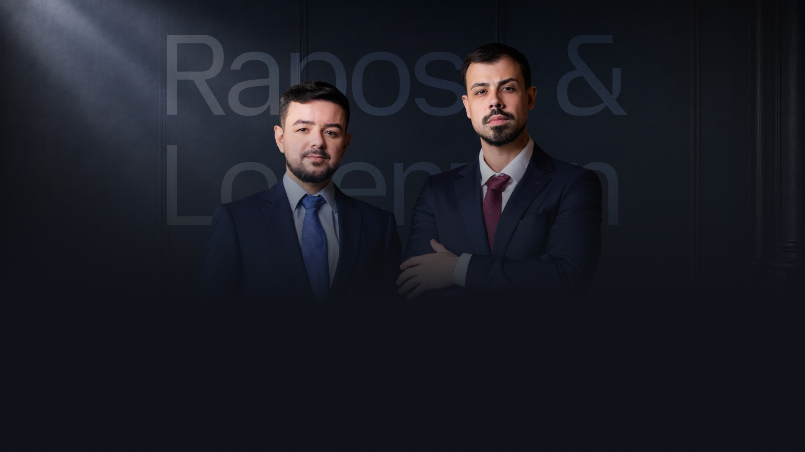

Você conta o que aconteceu
Explique a situação da sua viagem e os prejuízos que a falha da companhia causou.
Nem todo atraso é aceito em silêncio. Falhas da companhia aérea podem gerar indenização real, e o primeiro passo é entender se o seu caso tem fundamento.
Processo de atendimento
Explique a situação da sua viagem e os prejuízos que a falha da companhia causou.
Verificamos bilhetes, comprovantes, prints, protocolos e demais registros disponíveis.
Apresentamos a leitura jurídica do caso de forma objetiva, sem juridiquês.
Havendo fundamento, orientamos os próximos passos e conduzimos a demanda com responsabilidade.
Perder uma reunião importante. Chegar atrasado em um compromisso. Gastar com hotel, alimentação ou transporte por causa da companhia aérea. Para muitas pessoas, um voo cancelado ou uma bagagem extraviada significa prejuízos concretos. O problema não está apenas no atraso em si, mas na assistência oferecida e nos prejuízos causados.
Quando a viagem é interrompida ou remarcada sem solução adequada.
Quando a espera causa prejuízos concretos ou transtornos relevantes.
Quando pertences são perdidos, entregues com atraso ou danificados.
Quando o passageiro fica sem informação, suporte ou alternativas razoáveis.

A possibilidade de reparação é avaliada a partir de fatores como o tempo do atraso, o motivo do problema, a assistência prestada pela companhia e os prejuízos que você sofreu. Por isso, antes de falar em indenização, o passo fundamental é organizar o que aconteceu e verificar as provas.
Muitos passageiros desistem de buscar apoio porque acreditam que “não vale a pena”, que “foi só um atraso” ou que a empresa sempre tem razão. Mas a sua dúvida inicial não precisa ser respondida sozinho. A primeira etapa é justamente organizar os fatos e ver se há base legal.
O papel da análise jurídica é transformar um transtorno confuso em uma avaliação clara.
Raposo e Lorenzon Advocacia
É exatamente para isso que serve a análise inicial: entender a falha, os prejuízos e se há base legal para conduzir o caso.

Agilidade para quem está viajando ou em outra cidade.
Focada estritamente em fatos e documentos comprobatórios.
Orientação direta para o cliente entender o cenário, sem falsas promessas.
Quanto mais informações você reunir, mais precisa será a nossa avaliação inicial.
Mesmo sem todos os documentos, ainda é possível realizar uma análise inicial do caso.
Perguntas frequentes
Não. A proposta desta etapa é entender os fatos, verificar os documentos disponíveis e esclarecer se o seu caso pode ter fundamento jurídico.
Sim. O atendimento pode ser feito de forma digital, com envio de documentos e orientação remota, o que facilita para quem está viajando ou mora em outra cidade.
Não necessariamente. Mesmo sem todos os documentos, já é possível fazer uma análise inicial com o que você tiver em mãos e indicar o que ainda pode ajudar.
O prazo pode variar conforme a situação concreta do caso. Por isso, vale buscar orientação o quanto antes para avaliar o cenário com segurança.
Não impede. Mesmo quando a companhia alega condições climáticas, é importante analisar como houve a comunicação, a assistência prestada e os prejuízos sofridos.
Análise inicial
A análise inicial pode esclarecer quais caminhos são possíveis para o seu caso.